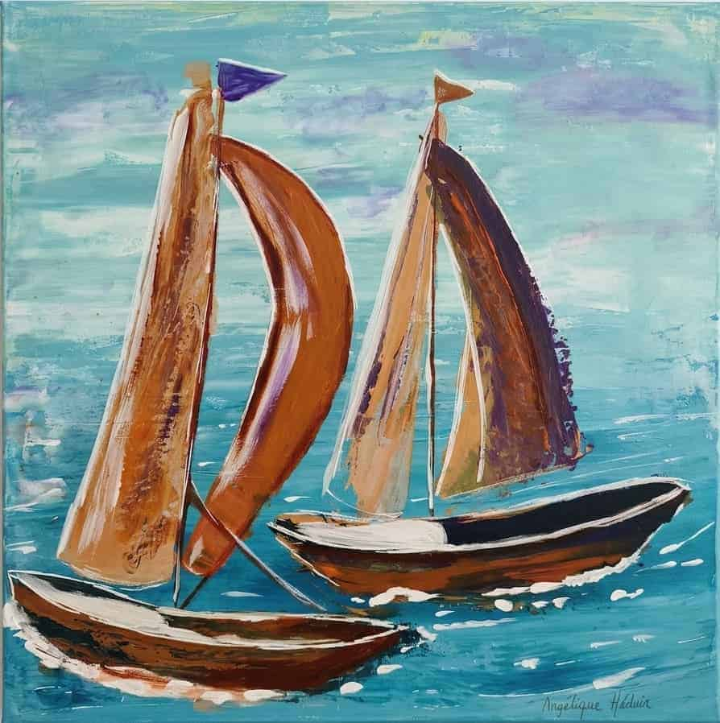

DisponibleN° 22 · Collection 2026 · Mer & Voiliers
Deux Voiles
Peinture acrylique sur toile · 2026
Deux voiliers filent côte à côte sur une mer turquoise travaillée en larges gestes. Leurs voiles, cuivre, ocre et violet profond, se répondent : l'une gonflée en arc, l'autre tendue comme une aile. L'écume blanche, posée en touches franches, dessine le sillage des coques. Le ciel, tout en nuages bleutés et lavande, laisse la lumière traverser la toile. Une peinture de mouvement et de respiration, à la fois libre et rythmée.
Idéal pour
Salon · Chambre · Bureau · Entrée · Salle de bain lumineuse
Format50 × 50 cm
TechniqueAcrylique sur toile
Date2026
ÉditionŒuvre unique originale
CertificatCertificat d'authenticité inclus
Disponible
Prix sur demande
Emballage soigné · Certificat d'authenticité inclus
Commandes personnalisées disponibles — contactez-moi